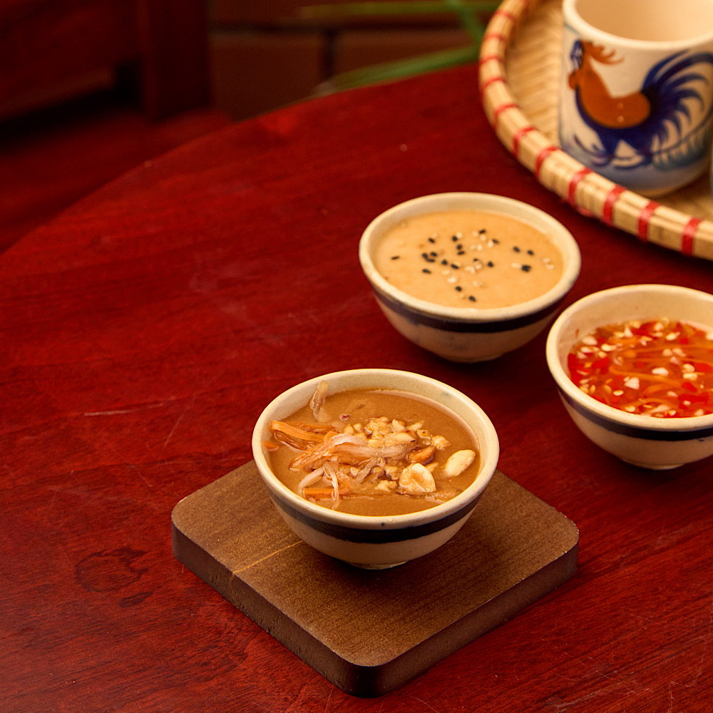
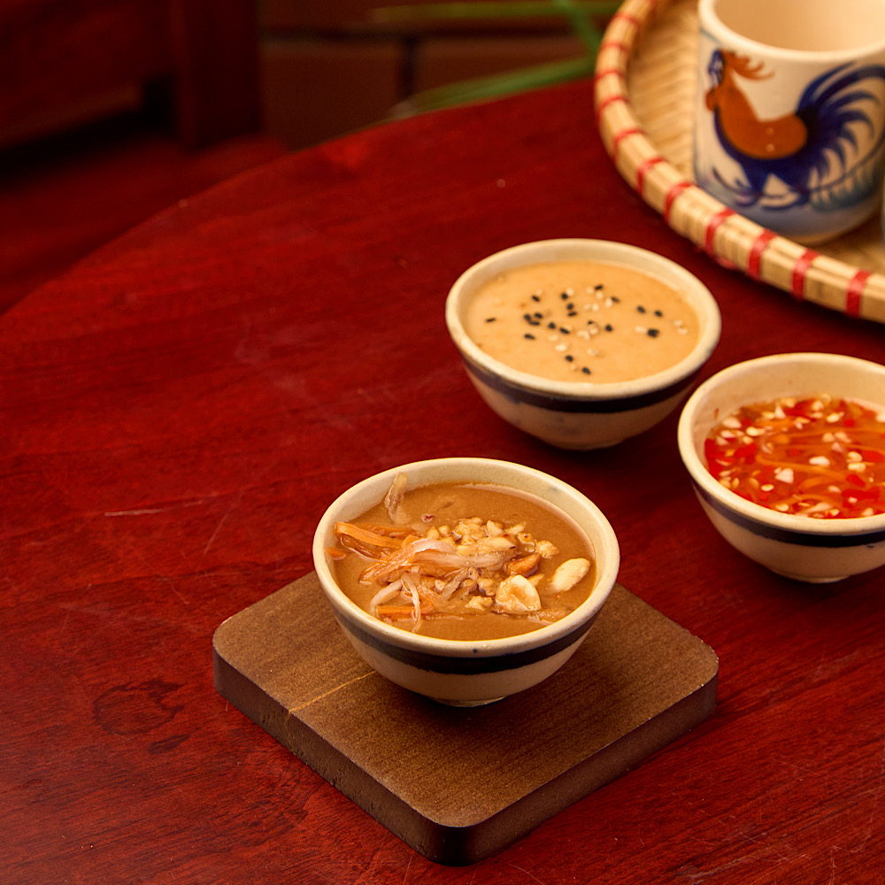
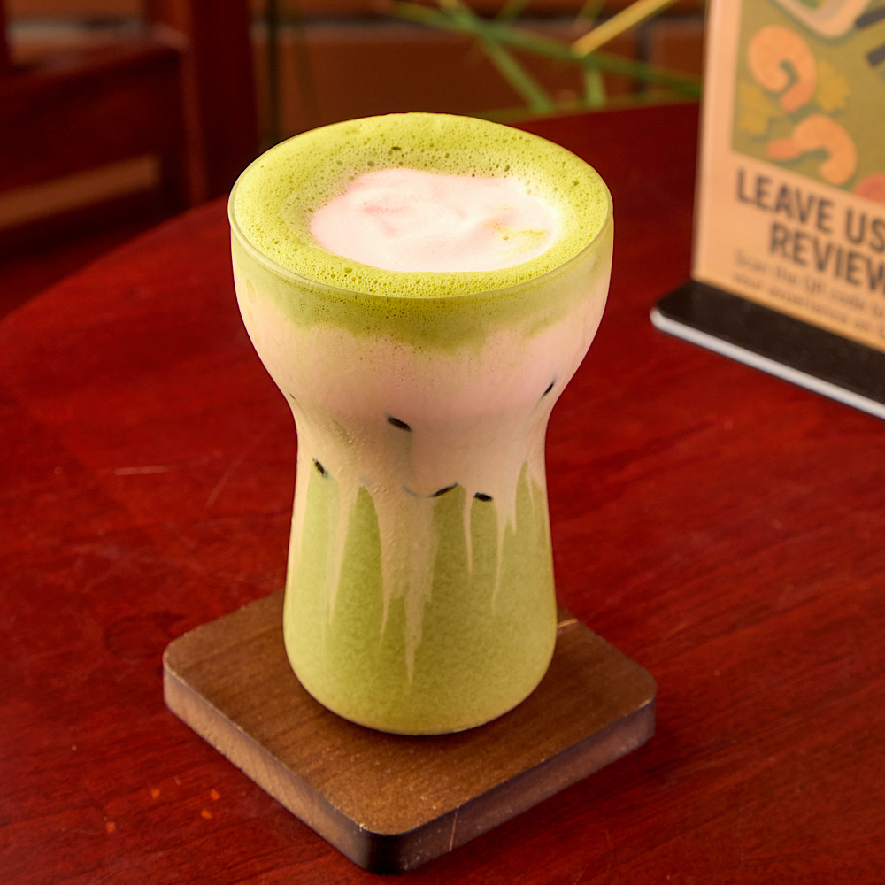
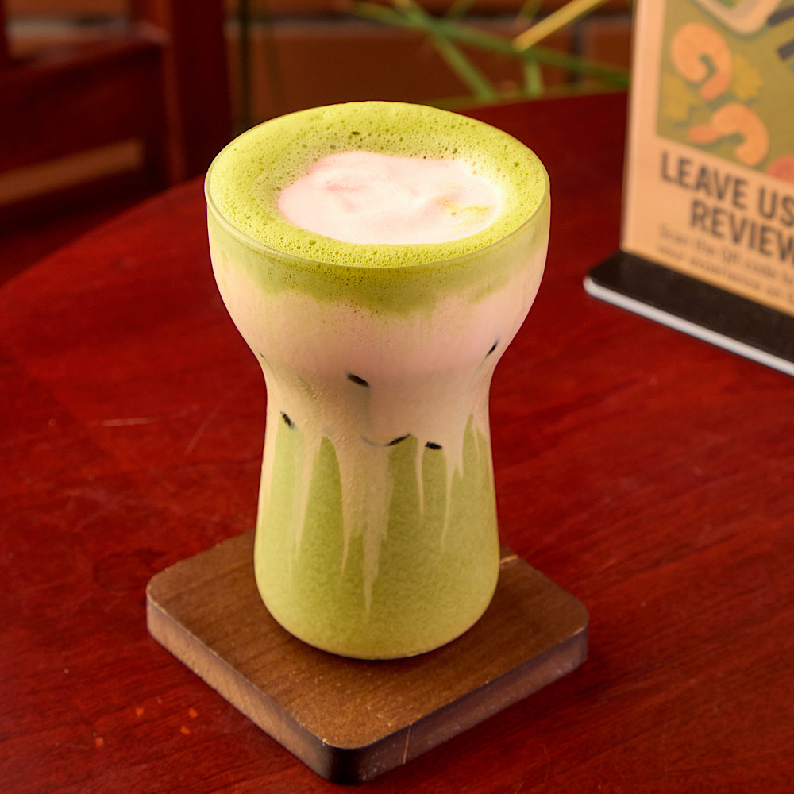
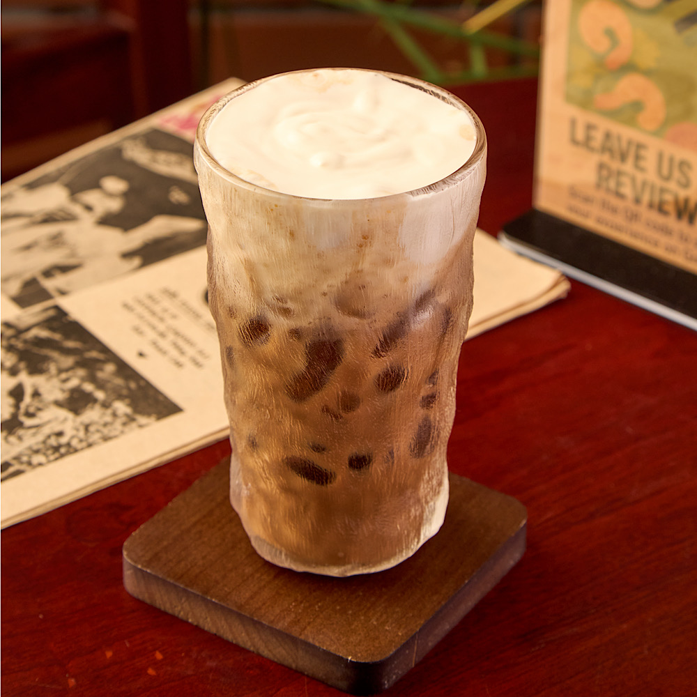
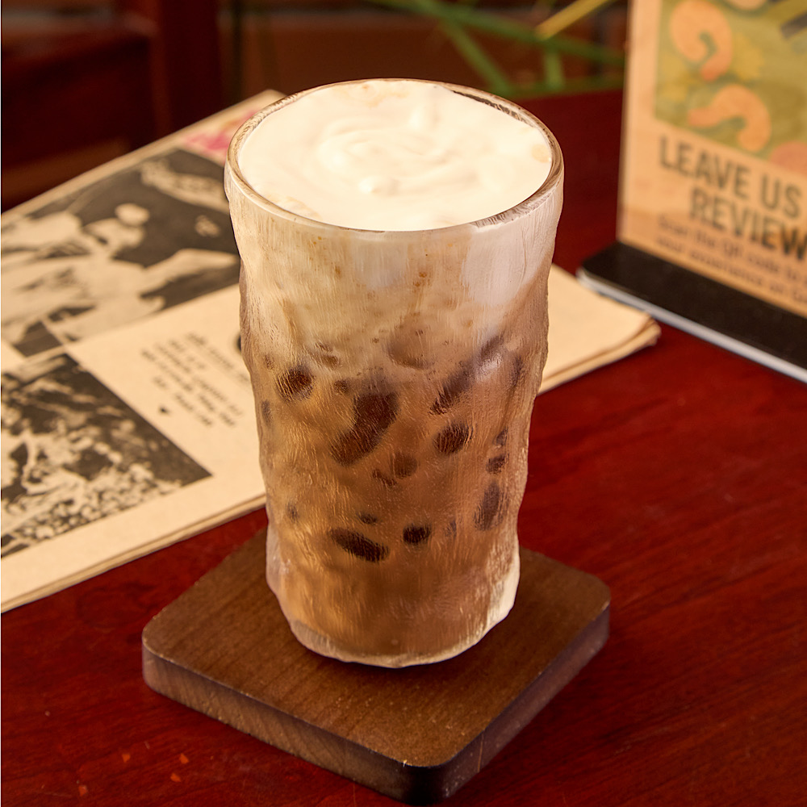

Our Story – Roly Poly Fresh Spring Rolls Da Nang
Da Nang’s first specialty spring roll café — fresh, local, and made with love in An Thuong.
About Roly Poly Fresh Spring Rolls Da Nang
Roly Poly Fresh Spring Rolls Da Nang is the city's first specialty fresh spring roll restaurant and Vietnamese café. Located in the heart of An Thượng, a vibrant beachside neighborhood in Da Nang, Vietnam, we serve handcrafted spring rolls made to order with locally sourced, high-quality ingredients.
Our journey began with a love for authentic Vietnamese street food and a mission to offer healthy, flavorful meals to locals, expats, and travelers. When we couldn’t find a place dedicated to fresh spring rolls in Da Nang, we decided to create one — simple, honest food made with care.
Each rice paper roll is a fresh celebration of Vietnamese flavor: filled with herbs, crisp veggies, and tender proteins, then paired with our signature house-made dipping sauces like creamy peanut or tangy sesame. We believe fresh food should be exciting, nutritious, and accessible.
“Roly Poly is a great example of simple done right. Thoughtfully made, honest food with a cozy, local charm — no gimmicks, just really solid food that speaks for itself.”
– Mark
Whether you're stopping by for a quick lunch, taking your rolls to the beach, or relaxing in our cozy, vintage-inspired space, we’re here to welcome you. Our café also serves Vietnamese coconut coffee, salted iced coffee, and our customer-favorite premium matcha latte.
We’re proud to support the local Da Nang community by sourcing ingredients from nearby farmers and suppliers whenever possible. Great food, great coffee, and warm, friendly service — that’s the Roly Poly promise.
Explore Our MenuOur Philosophy
Fresh, made-to-order spring rolls with high-quality ingredients
House-made sauces crafted to complement every spring roll
Specialty Vietnamese coffee, fresh juices and premium matcha latte
Locally sourced produce wherever possible
Friendly service in a cozy, vintage café
Gallery


 

 

 
